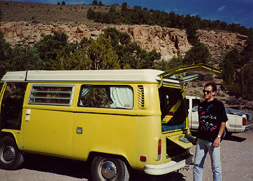
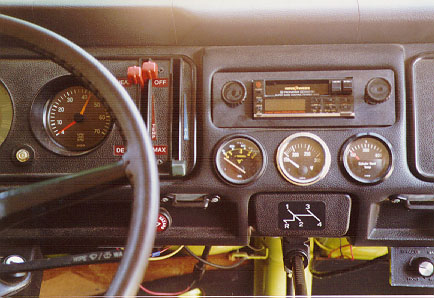
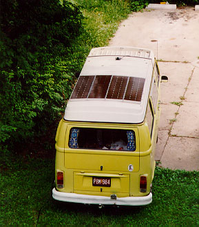

BéBé King

"BéBé King" is now powered by a 911 engine. Click here for details.
 These pictures show some customizations. Added gauges fitted into the dash
for that "special" look :) Don't do it if you like to preserve resale value...
 Solar panels, installed back in 1994. David Schwarze found them for me in San Diego. I think I paid $300 for
the panels and it was a good deal. They should be significantly more
now. Add hardware, wiring, charge controller, deep cycle battery and it
quickly adds up. I think $600-700 sounds about right.
Output is about 85 Watts per hour of sun. Just about right for the
fridge, except that the fridge also needs power the remaining 16 hours
of the day... It was not intended for the fridge though, which I pulled
anyway. I prefer a simple ice box. My original plan was to be able to
run my laptop and other small appliances for an extended period of time,
i.e., to turn the bus into an office-on-the-road. But those were the
days when I was still single; now I wouldn't leave home w/out the family
and I wouldn't be able to work in the bus if the family was there. :)